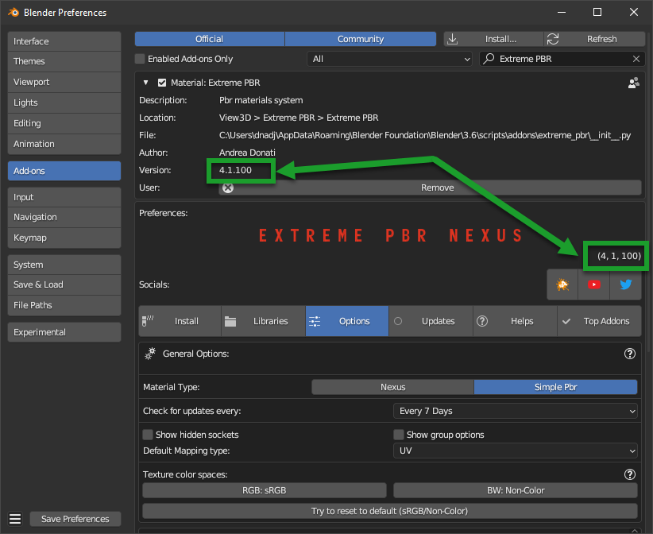
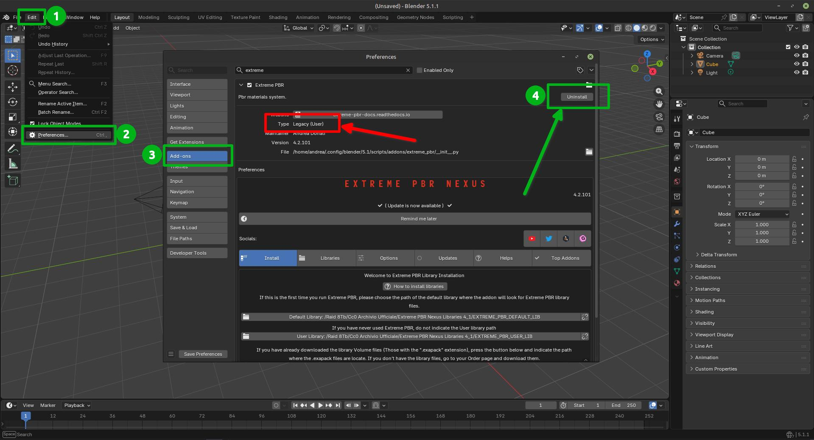
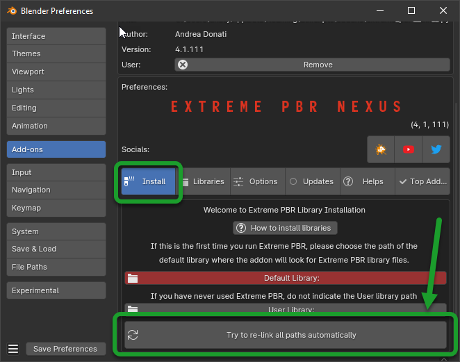
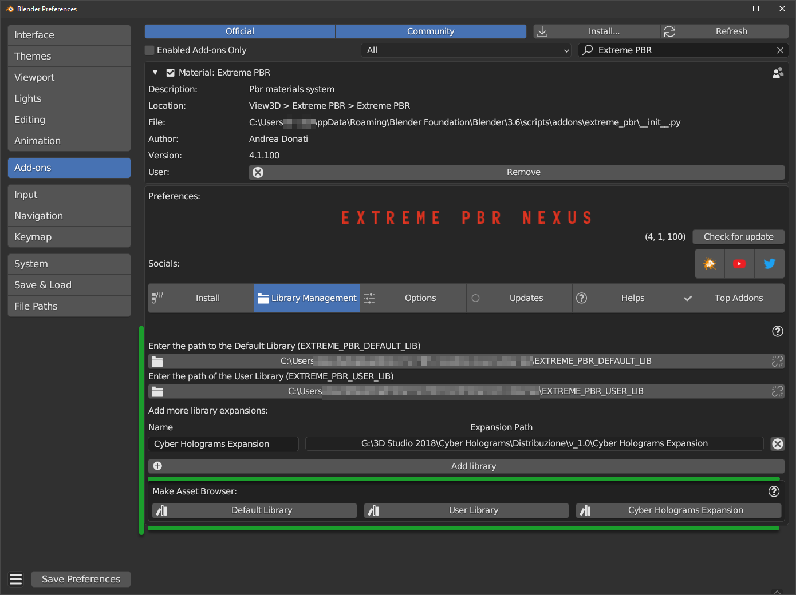

Update The addon
To check which version of Extreme PBR you are using and therefore be sure which guide to follow, you can check
the version of the addon in 2 ways:
- Via edit > preferences > addons and looking for the addon in the list by typing Extreme PBR in the search bar
- If you have already installed the addon, you can access the preferences, by clicking on the button Open Options
So the version is indicated in 2 places in the preferences window like this:
{kind=link}

Important
While switching from Blender versions lower than 4.2 to 4.2 or higher, there may be residues of “Legacy” addons that could create confusion in the correct installation/update of the addon. If you are in Blender 4.2 or higher, make sure that the addon is not installed as “Legacy” if it is Uninstall it, save the preferences and restart Blender.
{kind=link}

Update from SuperHive (Formerly BlenderMarket)
From 2026 SuperHive (Formerly BlenderMarket) has introduced its own repository for extensions, this is very convenient, our addons have supported this functionality for a long time.
If you have never configured the SuperHive repository Uninstall Extreme PBR from the list of Blender extensions
- If you have uninstalled the addon in the previous step, in this case perform the installation as if it were the first installation going here:
If you have already configured the SuperHive repository, you just need to press the “Update” button as you see in the image below.
Relink the libraries: Relink Libraries
{kind=link}
{kind=link}
Update from Gumroad or other sources
Download the addon file
In your product page, you can find various files, the main ones for the installation are the following:
extreme_pbr_v4####.zipis the addon for blender, this is the first element to download and install, the version you have may be different, but the name will always start with “extreme_pbr_v…” and end with “.zip”
Here are the main pages where we have our products, remember that you will need to be logged in to access the purchase page:
Gumroad: https://app.gumroad.com/library
SuperHive (Formerly BlenderMarket): https://superhivemarket.com/account/orders
Important
The addon file must remain in zip format! Do not unzip the file, otherwise you will not be able to install it correctly. This note is especially for Mac users.
Once the addon is downloaded, open Blender and make drag and drop of the downloaded file into the Blender window:

If everything went well, the addon is in the list of installed addons, you can also search for it by typing “Extreme PBR” Mark the checkbox to activate it.

Relink the libraries: Relink Libraries
Relink Libraries
Try to Relink Libraries in automatic with the button Try to re-link all paths automatically available from version 4.1.110 onwards, this if the addon has already been installed correctly previously, should automatically relink the paths to the Extreme PBR libraries (Including any expansions) If this does not work, go to the next step.
{kind=link}

If the previous step failed, go to the Libraries tab and refer to this section that explains how the connection to the library paths works Libraries
{kind=link}
